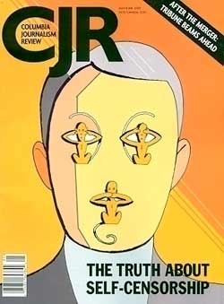

Internet i budućnost novina

Columbia Journalism Review organizovala je u martu diskusiju na temu budućnosti štampanih medija u doba ekspanzije interneta. Diskusija može da se presluša.
Osnova za to bio je tekst Robert Kuttnera. Text izrazito preporučujem onima koje tema interesuje, ali pošto je dosta dugačak, izvukla sam delove koje smatram najbitnijim i najinteresantnijim.
***
Brojni indikatori u svetu pokazuju da su novine u silaznoj putanji. To može biti loša vesta, ali je moguće videti i pozitivnu stranu. A to je ona u kojoj novine, iako su reagovale sa zakašnjenjem, nađu način da na internetu naprave ozbiljan novac i da iskoriste internet da obogate tradicionalne novinarske forme, u isto vreme zadržavajući svoj profesionalizam i čitaoce. Na taj način, novine mogu da prežive kao hibridne forme. Kultura i građanska misija dnevnog štampanog novinarstva opstaje.
***
Danas u svetu postoji i nova forma internet izraza. To su ekspertski sajtovi koji nisu blogovi, a nisu ni novinarstvo. Ipak, to je bitna kategorija koju medijski kritičari često ostavljaju po strani jer prave podelu na amaterske blogove i profesionalno izveštavanje. Mnogo takvih sajtova vode akademski istraživači ili stručnjaci koji su razvili ukus za popularnu kulturu i publiku i kombinuju stil blog komentarisanja aktuelnih događaja sa svojim analizama i ozbiljnim istraživanjem. Ova kategorija još uvek nema ime, ali bi se mogla zvati CROGS – od Carefully Researched Blogs.
***
Da se vratim temi. Novi mediji, i to je ironija i paradoks, dok u isto vreme predstavljaju izazov za opstanak novina, u isto vreme postaju i njihov spasilac – i u novinarskom i u biznis smislu.
Novine prihvataju internet sa strašću konvertita. Internet prihodi novina rastu za 20 do 30 posto godišnje i izdavači preduzimaju sve što je moguće da povećaju saobraćaj na webu.
Mišljenje koje je izneo Tom Rosenstiel iz The Project for Excellence in Journalism jeste da kad se jednom na emotivnom nivou prihvati činjenica da je došlo do promene u prirodi medija, zapravo se shvata da je za novinarstvo internet neuporedivo bolji od štampe. Jer, on nudi linkove ka dodatnom materijalu, originalnim dokumentima, punim tekstovima intervjua, video zapisima i onoliko statistika koliko čitalac može da podnese.
Dakle, izdavači bi trebalo da rade sa onime što imaju, investirajući u ljude i tehnologije (Njujork Tajms ulaže nekoliko miliona godišnje u research & development u ovoj sferi) , kako bi uspešno prošli kroz transformaciju do obećane zemlje hibrida štampanog i web izdavaštva.
Mi kao čitaoci na izvestan način ovlašćujemo urednike novina koje čitamo da daju zadatke novinarima i da odluče šta je to što bi trebalo da znamo, izveštavajući precizno i tačno. Ali, u isto vreme, mi ne moramo da biramo ili novine ili internet. Možemo, naprotiv, da u isto vreme pratimo i ozbiljan dnevni list i čitav niz internet sajtova.
Ono što je najvažnije nije da li li su novine štampane ili su na internetu, već da li ispunjavaju svoju istorijsku misiju.
***
Kako vam ovo izgleda? Meni realno, pošto povezuje i ideju, kreativnost, misiju i biznis. Teško da bilo ko može bilo šta da tvrdi u vezi budućnosti, ali ovakav jedan scenario mi se sviđa.
UPDATE
Otvoreno pismo "Nepristajanje na muk", u znak protesta zbog pokušaja ubistva novinara Dejana Anastasijevića.
Izveštaj sa protesta ispred Londona na Belgrade 2.0.
Komentari
la lara | 14.04.07 15:14
Kitten | 15.04.07 04:21
la lara | 15.04.07 08:25
Na zalost nemam pretplatu na e-magazin ali ovaj naslov obecava:
I najveci gube bitke
Robert Coban
http://www.emagazin.co.yu/clanak.asp?id=859
 Maja | 18.04.07 16:50
Maja | 18.04.07 16:50
 RSS feed
RSS feed sadržaji se objavljuju pod
sadržaji se objavljuju pod
sasvim realno i pozeljno